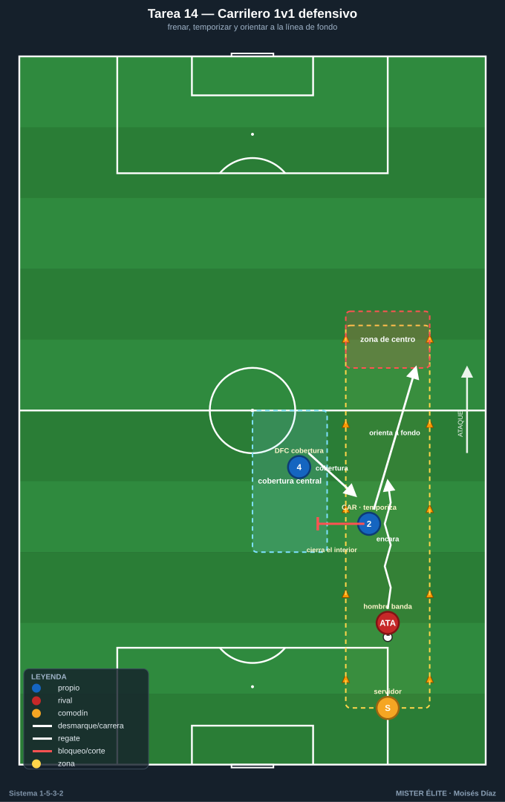
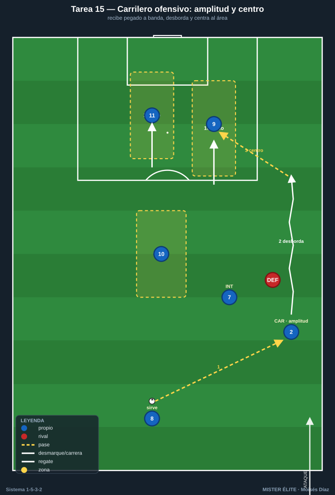
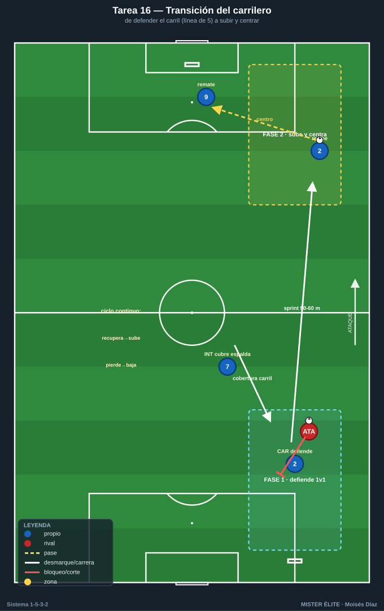
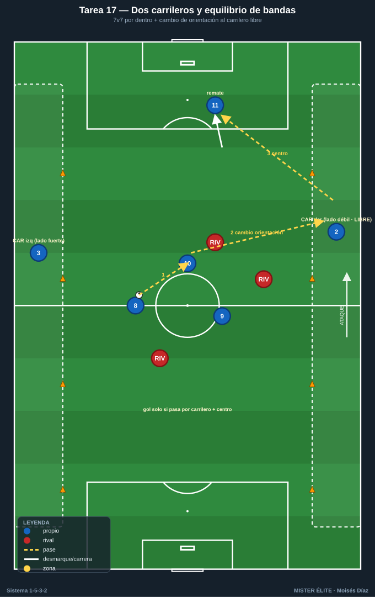
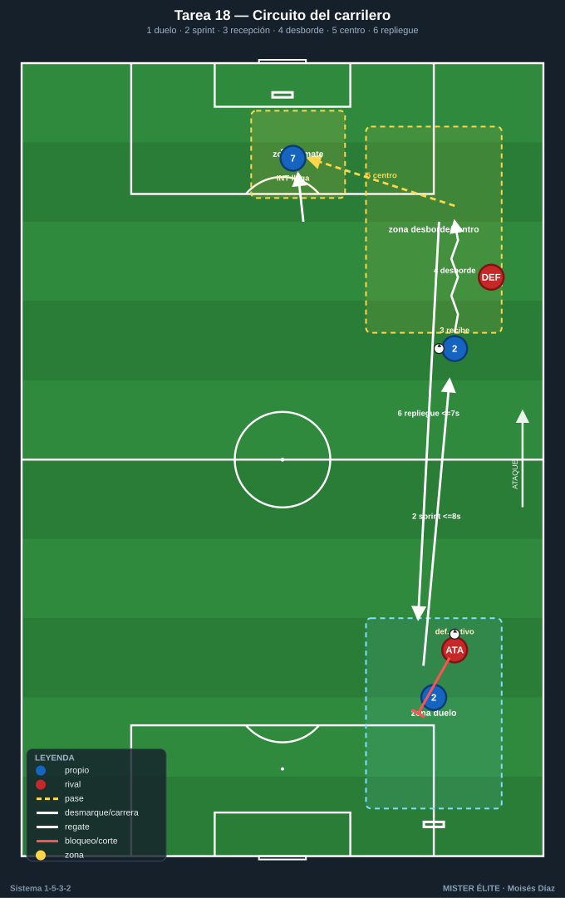

Bloque 4 · Doble función de los carrileros (bloque central del sistema) ★
Tareas T14–T18. El carrilero (CAR) es la pieza que define el 1-5-3-2. Debe resolver dos trabajos opuestos en la misma banda: defender su carril 1v1 (bajar a la línea de 5, frenar al hombre de banda, proteger el segundo palo) y dar amplitud y centrar (subir como un extremo, desbordar, poner el balón al área). Cubre 60–70 m de banda una y otra vez. Estas cinco tareas —el peso del banco— entrenan ambas caras y la transición entre ellas.
TAREA 14 — El carrilero 1v1 defensivo: frenar y orientar a la línea (analítica/situacional) ★
- Objetivo: entrenar la cara defensiva del carrilero: defender su carril en 1v1 contra el hombre de banda rival, frenar el desborde, orientarlo a la línea de fondo o hacia dentro (donde está la cobertura del central), sin dejarse superar por dentro.
- Organización:
- Jugadores: parejas CAR (defensor) vs atacante de banda; con 1 DFC contiguo que da cobertura por dentro y 1 servidor.
- Espacio: un carril de banda de 12–15 m de ancho × 25 m de fondo, repetido en ambas bandas.
- Material: conos del carril, una zona de fondo (línea de centro) que el atacante intenta alcanzar para centrar, otra zona interior (que el carrilero protege orientando al central).

- Desarrollo: el servidor da el balón al atacante de banda. El carrilero defiende el 1v1: frena, retrocede temporizando, no se lanza, y orienta al atacante hacia la zona de cobertura del central, o lo manda a línea de fondo sin centro útil. Si llega a la zona de centro, centra; si lo orienta al central, robo/ayuda.
- Provocaciones:
- El carrilero no puede ser superado por dentro: si lo gana por el carril interior = punto doble (descubre el centro).
- El carrilero gana punto si manda al atacante a línea de fondo sin permitir centro al área.
- El central contiguo debe dar cobertura visible (diagonal por dentro): defender sin cobertura = repetición.
- Variantes: 1. 1v1 puro, atacante a media intensidad. 2. 1v1 real con opción de centro; el central cubre. 3. 2v2 (carrilero + central vs hombre de banda + delantero que ataca el centro).
- Coaching: temporizar, no lanzarse; cuerpo orientado para cerrar el interior y ofrecer la línea de fondo; "que centre desde donde no hace daño"; relación constante con el central; paciencia del defensor.
- Duración / categoría: 16–20 duelos por carrilero, en bloques (16–18 min). A / S (versión fácil para F).
TAREA 15 — El carrilero ofensivo: amplitud, desborde y centro (situacional ofensiva) ★
- Objetivo: entrenar la cara ofensiva del carrilero: recibir alto y abierto dando la máxima amplitud (transformando el 3 atrás en 5 ofensivos), encarar, desbordar y poner un centro de calidad para los 2 delanteros + el interior que llega.
- Organización:
- Jugadores: por banda: 1 CAR + 1 interior que se asocia + 2 DC que atacan el área + 1 que llega a la frontal, vs 1 defensor de banda + línea defensiva + POR.
- Espacio: media banda + zona de finalización (área grande + 30 m), ambos lados.
- Material: portería, balones en origen (central/pivote que sirve), conos de zonas del área (1er palo / 2º palo / frontal).

- Desarrollo: el balón sale del central/pivote al carrilero abierto y alto. El carrilero encara: desborda por fuera para centro tenso, o juega una pared con el interior para llegar al fondo. Centra; los 2 DC atacan primer y segundo palo, el interior llega a la frontal/rechace. Remate.
- Provocaciones:
- El carrilero debe recibir pegado a la banda: si recibe metido por dentro, secuencia anulada.
- Centro raso/al primer palo se premia (gol doble) frente al globo cómodo.
- Cronómetro: del desborde al remate, máximo 4 s.
- Deben ocuparse siempre los 3 puntos del área (1er palo, 2º palo, frontal): si falta uno, gol no cuenta.
- Variantes: sin defensa (técnica + ocupación) → defensor pasivo → 1v1 real → añadir que el carrilero del lado contrario llegue al segundo palo (la "llegada del carrilero ciego").
- Coaching: amplitud máxima al recibir; encarar con ritmo; calidad y tensión del centro; cruces de los delanteros; el carrilero contrario ataca el segundo palo como un delantero más.
- Duración / categoría: 20–24 centros (10–12 por banda) (18–20 min). A / S.
TAREA 16 — La transición del carrilero: de defender el carril a centrar (situacional de doble función) ★
- Objetivo: entrenar el gesto que define al carrilero: pasar de la fase defensiva (en la línea de 5) a la ofensiva (subir 50–60 m a dar amplitud y centrar) en cuanto el equipo recupera, y a la inversa.
- Organización:
- Jugadores: bloque por banda: CAR + 2 DFC + interior + DC, vs un equipo rival que ataca esa banda y luego pierde el balón.
- Espacio: una banda completa a lo largo (medio campo de longitud × 30 m de ancho), con portería en cada extremo (la propia que el carrilero defiende y la rival a la que llega para centrar).
- Material: 2 porterías, balones para reinicios.

- Desarrollo: Fase 1: el rival ataca la banda; el carrilero defiende su carril 1v1. Fase 2 (al recuperar): señal, y el carrilero sprinta hacia arriba por su banda a recibir y centrar; el interior cubre temporalmente su espalda. Si el equipo vuelve a perder, el carrilero vuelve a bajar a la línea de 5. Ciclo continuo.
- Provocaciones:
- Al recuperar, el carrilero tiene un tiempo límite (p. ej. 6 s) para llegar a zona de centro.
- Mientras el carrilero está arriba, si el rival recupera y ataca su carril vacío, el interior debe estar cubriendo: si nadie cubre y el rival progresa = punto rival.
- El carrilero no puede quedarse arriba si el equipo ha perdido el balón más de 3 s: debe iniciar el regreso a la línea de 5.
- Variantes: ritmos controlados → transición real continua → añadir el otro carrilero para ver el equilibrio (uno sube, el otro se queda).
- Coaching: condición física y mentalidad de ida y vuelta; "subo cuando recuperamos, bajo cuando perdemos, sin discutir"; el interior es el socio del carrilero; leer cuándo merece la pena subir; equilibrio entre los dos carrileros.
- Duración / categoría: 4 series de 4 min por banda (18–20 min). A / S. (Tarea clave del sistema.)
TAREA 17 — Los dos carrileros y el equilibrio de bandas (juego de posición ofensivo)
- Objetivo: consolidar el uso simultáneo de ambos carrileros para dar la amplitud del 1-3-5-2, cambiando de orientación de una banda a otra para encontrar al carrilero libre y centrar, manteniendo el equilibrio defensivo.
- Organización:
- Jugadores: 7v7 + 2 porteros, con los 2 carrileros como piezas fijas en los carriles exteriores (o comodines de amplitud).
- Espacio: 55×45 m con dos carriles de banda marcados (6–7 m a cada lado).
- Material: 2 porterías grandes, conos de carriles.

- Desarrollo: juego libre por dentro, pero la amplitud la dan exclusivamente los dos carrileros en sus carriles. El gol solo vale si la jugada ha pasado por un carrilero y ha habido centro o pase desde banda antes del remate. Se premia cambiar de orientación para encontrar al carrilero del lado débil.
- Provocaciones:
- Gol sin pasar por un carrilero = no vale (la anchura es de los carrileros, no hay extremos).
- Cambio de orientación de banda a banda que termina en centro del carrilero libre = punto doble.
- 2 toques por dentro, libre para el carrilero en su carril.
- Solo un carrilero puede subir al ataque por posesión; el otro mantiene equilibrio.
- Variantes: carrileros como comodines fijos → carrileros que también defienden (bajan al perder) → exigir 2 atacantes en el área al centro.
- Coaching: amplitud permanente de ambos carrileros; cambiar de orientación para activar el lado débil; llegada de interiores y delanteros; un carrilero sube, el otro equilibra; calidad del centro.
- Duración / categoría: 4 series de 4 min (18 min). A / S.
TAREA 18 — Circuito del carrilero: ida y vuelta con finalización (físico-técnico aplicado)
- Objetivo: preparar la exigencia física y técnica del carrilero (recorrer la banda en ataque y defensa) mediante un circuito que reproduce la doble función con duelo real, no contra conos.
- Organización:
- Jugadores: 2–4 carrileros rotando + 1 atacante de banda y 1 defensor de desborde (ambos activos, rotan) + servidores + 1 rematador y 1 llegador interior por estación.
- Espacio: banda completa (medio campo de longitud × 20 m de ancho), con zonas de duelo defensivo (abajo) y de desborde/centro (arriba) marcadas con cal.
- Material: conos de zonas, balones, portería, mini-portería defensiva para el atacante de banda.

- Desarrollo: circuito continuo por la banda: (1) el carrilero defiende un 1v1 real abajo, orientando a línea de fondo o robando; (2) al recuperar/despejar, sprinta 40–50 m por su carril; (3) recibe en carrera; (4) encara y desborda a un defensor activo; (5) centra al rematador con el interior llegando a la frontal; (6) repliegue inmediato a la zona de inicio. Cronometrado para simular el esfuerzo real.
- Provocaciones (medibles):
- Tramo de subida (zona defensiva → recepción) ≤ 8 s a intensidad máxima; fuera de tiempo = repetición.
- En el 1v1 defensivo, mandar a línea de fondo o robar = válido; ser superado por dentro = penalización (repetir tramo).
- El centro tras el desborde debe caer en una zona marcada (1er palo / 2º palo / frontal) con el interior llegando: centro a zona vacía o fallado = repetición.
- Repliegue tras centrar ≤ 7 s a la zona defensiva.
- Variantes: oponentes a media intensidad y menos volumen (formativo) → oponentes activos y más densidad (sénior) → un segundo carrilero en paralelo en la otra banda.
- Coaching: ritmo de carrera; resolver duelos reales arriba y abajo (no fintar a un cono); técnica de centro bajo fatiga; gestionar el esfuerzo; este es el coste físico del rol; calidad en la última acción aunque llegue cansado.
- Duración / categoría: 6–8 repeticiones por carrilero, ratio trabajo:descanso ~1:3 (16–20 min). A / S (volumen y oposición ajustados en F).